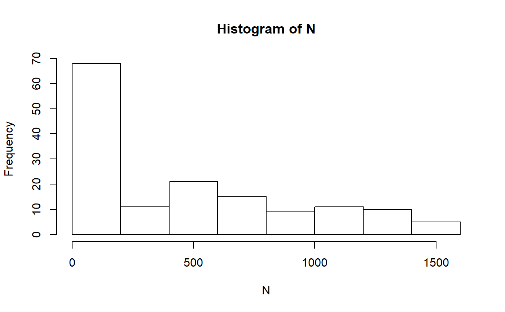
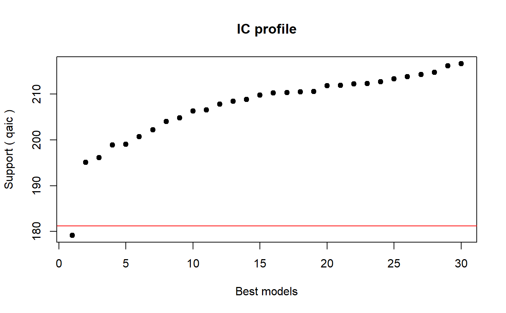
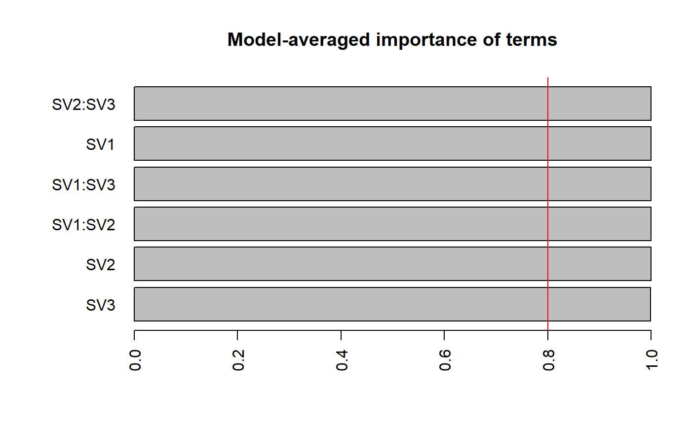

fit_regression fits either a Generalized Linear Model or a betareg model
to the data and search for the best model(s) given a list of predictors using
the R package glmulti.
fit_regression( data, lookup = NULL, census = TRUE, yr, project, scenario, popn, param = "N", vs = c("GS1"), count_data = c("Nextant", "Nall", "Nalleles", "N", "AM", "AF", "Subadults", "Juv", "nDams", "nBroods", "nProgeny", "nImmigrants", "nEmigrants", "nHarvested", "nSupplemented", "YrExt", "Alleles"), ic = "aic", l = 1, ncand = 30, set_size = NA, links = c("logit", "probit", "cloglog", "cauchit", "loglog"), save2disk = TRUE, dir_out = "DataAnalysis/FitRegression" )
| data | The long format of census (from |
|---|---|
| lookup | (Optional) A look-up table where the scenario names are listed together with the (missing) variables needed to fit the regression models |
| census | Whether the input is census data |
| yr | The year that has to be used in the analysis if census=TRUE |
| project | The Vortex project name |
| scenario | Vortex scenario name |
| popn | The sequential number of the population (in integer) |
| param | The dependent variable |
| vs | Character vector with independent variable(s) |
| count_data | Character vector with param(s) that are counts and would use a Poisson error distribution |
| ic | Information criterion |
| l | Level for glmulti search: 1 main effects, 2 main effects + interactions |
| ncand | The threshold of candidate models after which switch to the genetic search method, default: 30 |
| set_size | Value to be used in confsetsize (from |
| links | Link functions to use in the Beta regression. |
| save2disk | Whether to save the output to disk, default: TRUE |
| dir_out | The local path to store the output. Default: DataAnalysis/FitRegression |
A glmulti object with the best models found.
fit_regression fits a different type of regression model depending on the
dependent variable. When this is a count (e.g. N or the number of alleles),
the function will fit a Generalized Linear Model. The first fit is attempted
with a Poisson error distribution and if the dispersion parameter (calculated
as \(residual deviance / df\) is larger than (the somewhat
arbitrary cut off of) 1.5, the model will be refitted with a quasipoisson
error distribution (a message is displayed if this happens).
fit_regression establishes whether the dependent variable is a count
by searching for it in count_data. If the users generated their own
dependent variable (e.g. through a PS), this has to be included in count_data
to indicate fit_regression that it is analysing count data.
When the number of alleles is the dependent variable (from .run files), this is rounded to integer (to meet R requirement that count data are integers) before a GLM is fitted to the data.
If param is a proportion (e.g. Gene Diversity and Inbreeding), then
the function uses a Beta regression from the R package betareg (Cribari-Neto
& Zeileis 2010). Different link functions are tested and the one with the
lowest AIC value is selected. The selected link function is displayed on the
R console and the difference in the AIC scores relative to the best link
function is also displayed.
In the initial fit of the model the main and interactions effects are included.
Successively, a search for the best model is carried out. This is performed
with the R package glmulti (Calcagno & de Mazancourt 2010).
fit_regression will conduct an exhaustive search if ncand is less or
equal to the number of candidate models, otherwise it will use a genetic
search method (see glmulti documentations for more details about the search
methods). When glmulti uses the genetic search method,
two small files (with extension .modgen.back and .mods.back. are
written in the working directory even if save2disk=FALSE.
fit_regression explicitly ignores NA.
Depending on the data, fitting several Beta regression models to complete the search may be a long (and memory hungry) process. Also, the package betareg has the limitation (at least at the moment of writing) that cannot handle analysis of data when the dependent variable takes value of either exactly 0 or 1.
See vignette for a more detailed explanation of fit_regression.
Calcagno, V., and C. de Mazancourt. 2010. glmulti: an R package for easy automated model selection with (generalized) linear models. Journal of Statistical Software 34:1-29.
Cribari-Neto, F., and Zeileis, A. (2010) Beta regression in R. Journal of Statistical Software 34(2).
# Using Pacioni et al. example data. See ?pac.run.lhs and ?pac.lhs for more # details. data(pac.run.lhs, pac.lhs) # Remove base scenario from .stdat data pac.lhs.no.base <- pac.lhs[!pac.lhs$scen.name == 'ST_LHS(Base)', ] # Use function lookup_table to obtain correct parameter values at year 0 lkup.ST_LHS <- lookup_table(data=pac.lhs.no.base, project='Pacioni_et_al', scenario='ST_LHS', pop='Population 1', SVs=c('SV1', 'SV2', 'SV3', 'SV4', 'SV5', 'SV6', 'SV7'), save2disk=FALSE) # Remove base scenario from .run output in long format lrun.ST_LHS.no.base <- pac.run.lhs[[2]][!pac.run.lhs[[2]]$Scenario == 'ST_LHS(Base)', ] reg <- fit_regression(data=lrun.ST_LHS.no.base, lookup=lkup.ST_LHS, census=FALSE, project='Pacioni_et_al', scenario='ST_LHS', popn=1, param='N', vs=c('SV1', 'SV2', 'SV3'), l=2, ncand=30, save2disk=FALSE)#>#> Min. 1st Qu. Median Mean 3rd Qu. Max. #> 0.0 0.0 380.5 441.7 779.8 1544.0#>#> Initialization... #> TASK: Diagnostic of candidate set. #> Sample size: 150 #> 0 factor(s). #> 3 covariate(s). #> 0 f exclusion(s). #> 0 c exclusion(s). #> 0 f:f exclusion(s). #> 0 c:c exclusion(s). #> 0 f:c exclusion(s). #> Size constraints: min = 0 max = -1 #> Complexity constraints: min = 0 max = -1 #> Your candidate set contains 64 models.#>#>#>#>#>#>#> TASK: Genetic algorithm in the candidate set. #> Initialization... #> Algorithm started... #> Improvements in best and average IC have bebingo en below the specified goals. #> Algorithm is declared to have converged. #> Completed.#>#> user system elapsed #> 1.37 0.16 2.05# Clean up of residual files written by glmulti # Note, in some OS (W) these files may be locked because in use by R and have # to be manually after the R session has been either terminated or restarted file.remove(c('Pacioni_et_al_ST_LHS_N.modgen.back', 'Pacioni_et_al_ST_LHS_N.mods.back'))#> Warning: cannot remove file 'Pacioni_et_al_ST_LHS_N.modgen.back', reason 'Permission denied'#> [1] FALSE TRUE# Example of information you can obtained once you have run fit_regression # The formula for the best model bestmodel <- reg@formulas[1] # The formulae for the best 30 model bestmodels <- reg@formulas # List of IC values qaicvalues <- reg@crits # QAIC differences between the first 5 best models (stored in 'delta') delta <- as.vector(NULL) for (i in 1:5) { del <- qaicvalues[i+1] - qaicvalues[i] delta <- c(delta, del) } # The best model's coefficients coef.best <- coef(reg@objects[[1]]) # The model averaged coefficients coef.all <- glmulti::coef.glmulti(reg) coefs <- data.frame(Estimate=coef.all[,1], Lower=coef.all[,1] - coef.all[,5], Upper=coef.all[,1] + coef.all[,5]) # Plot IC profile plot(reg, type='p')